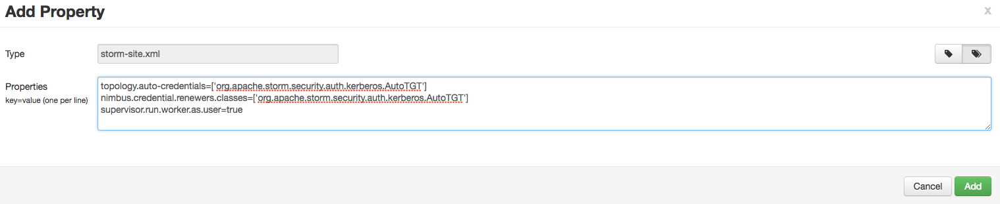
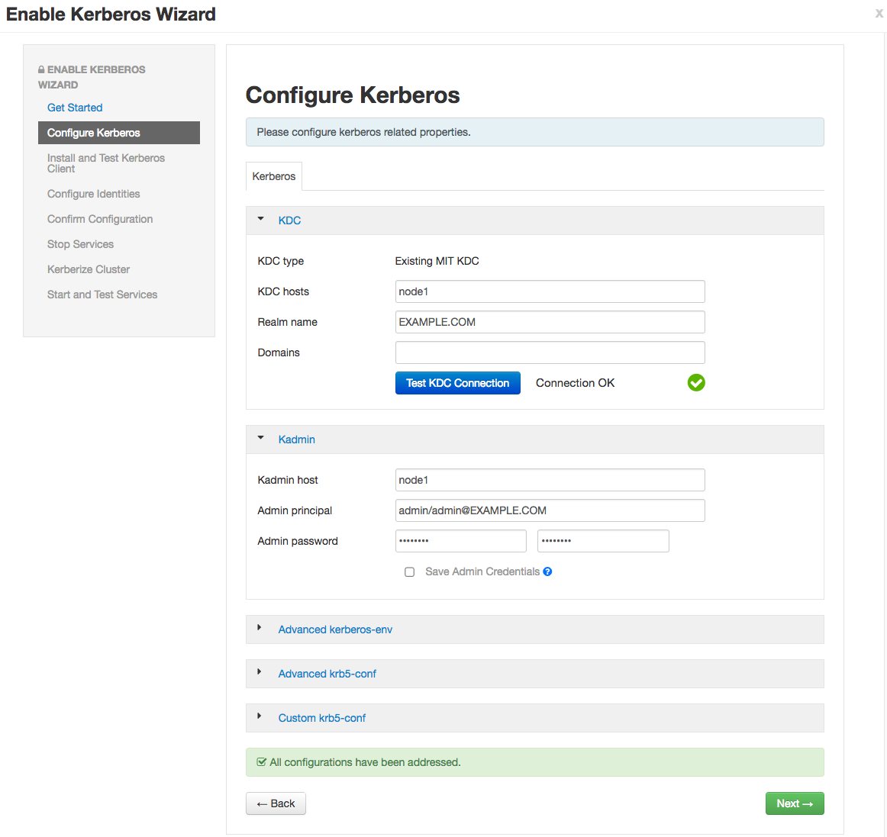

Kerberos Setup
This document provides instructions for kerberizing Metron’s Vagrant-based development environments. These instructions do not cover the Ambari MPack or sensors. General Kerberization notes can be found in the metron-deployment README.md.
- Setup
- Setup a KDC
- Verify KDC
- Enable Kerberos
- Kafka Authorization
- HBase Authorization
- Storm Authorization
- Start Metron
- Push Data
- More Information
- Elasticseach X-Pack
Setup
-
Deploy the development environment..
-
Export the following environment variables. These need to be set for the remainder of the instructions. Replace node1 with the appropriate hosts, if you are running Metron anywhere other than Vagrant.
# execute as root sudo su - export KAFKA_HOME="/usr/hdp/current/kafka-broker" export ZOOKEEPER=node1:2181 export ELASTICSEARCH=node1:9200 export BROKERLIST=node1:6667 export HDP_HOME="/usr/hdp/current" export KAFKA_HOME="${HDP_HOME}/kafka-broker" export METRON_VERSION="${METRON_VERSION}" export METRON_HOME="/usr/metron/${METRON_VERSION}" -
Execute the following commands as root.
sudo su -
-
Stop all Metron topologies. They will be restarted again once Kerberos has been enabled.
for topology in bro snort enrichment indexing; do storm kill $topology; done
-
Create the metron user’s home directory in HDFS.
sudo -u hdfs hdfs dfs -mkdir /user/metron sudo -u hdfs hdfs dfs -chown metron:hdfs /user/metron sudo -u hdfs hdfs dfs -chmod 770 /user/metron
Setup a KDC
-
Install dependencies.
yum -y install krb5-server krb5-libs krb5-workstation
-
Define the current host as the KDC.
KDC=`hostname` sed -i.orig 's/kerberos.example.com/'"$KDC"'/g' /etc/krb5.conf cp -f /etc/krb5.conf /var/lib/ambari-server/resources/scripts
-
Ensure that the KDC can issue renewable tickets. This may be necessary on a real cluster, but should not be on a single VM.
Edit /var/kerberos/krb5kdc/kdc.conf and ensure the following is added to the realm section
max_renewable_life = 7d
-
Create the KDC principal database. You will be prompted for a password. This step takes a moment.
kdb5_util create -s
-
Start the KDC and ensure that it starts on boot.
/etc/rc.d/init.d/krb5kdc start chkconfig krb5kdc on
-
Start the Kerberos Admin service and ensure that it starts on boot.
/etc/rc.d/init.d/kadmin start chkconfig kadmin on
-
Setup the admin principal. You will be prompted for a password; do not forget it.
kadmin.local -q "addprinc admin/admin"
-
Setup the metron principal. You will kinit as the metron principal when running topologies. You will be prompted for a password; do not forget it.
kadmin.local -q "addprinc metron"
Verify KDC
-
Ticket renewal is disallowed by default in many Linux distributions. If the KDC cannot issue renewable tickets, an error will be thrown when starting Metron’s Storm topologies:
Exception in thread "main" java.lang.RuntimeException: java.lang.RuntimeException: The TGT found is not renewable
-
Ensure the Metron keytab is renewable. Look for the ‘R’ flag in the output of the following command.
klist -f
- If the ‘R’ flags are present, you may skip to next section.
- If the ‘R’ flags are absent, you will need to follow the below steps:
-
If the KDC is already setup, then editing max_life and max_renewable_life in /var/kerberos/krb5kdc/kdc.conf, then restarting kadmin and krb5kdc services will not change the policies for existing users.
You need to set the renew lifetime for existing users and the krbtgt realm. Modify the appropriate principals to allow renewable tickets using the following commands. Adjust the parameters to match your desired KDC parameters:
kadmin.local -q "modprinc -maxlife 1days -maxrenewlife 7days +allow_renewable krbtgt/EXAMPLE.COM@EXAMPLE.COM" kadmin.local -q "modprinc -maxlife 1days -maxrenewlife 7days +allow_renewable metron@EXAMPLE.COM"
Enable Kerberos
-
In Ambari, setup Storm to use Kerberos and run worker jobs as the submitting user.
a. Add the following properties to the custom storm-site:
topology.auto-credentials=['org.apache.storm.security.auth.kerberos.AutoTGT'] nimbus.credential.renewers.classes=['org.apache.storm.security.auth.kerberos.AutoTGT'] supervisor.run.worker.as.user=true
b. In the Storm config section in Ambari, choose “Add Property” under custom storm-site:

c. In the dialog window, choose the “bulk property add mode” toggle button and add the below values:

-
Kerberize the cluster via Ambari. More detailed documentation can be found here.
a. For this exercise, choose existing MIT KDC (this is what we setup and installed in the previous steps.)


b. Setup Kerberos configuration. Realm is EXAMPLE.COM. The admin principal will end up as admin/admin@EXAMPLE.COM when testing the KDC. Use the password you entered during the step for adding the admin principal.

c. Click through to “Start and Test Services.” Let the cluster spin up, but don’t worry about starting up Metron via Ambari - we’re going to run the parsers manually against the rest of the Hadoop cluster Kerberized. The wizard will fail at starting Metron, but this is OK. Click “continue.” When you’re finished, the custom storm-site should look similar to the following:

-
Create a Metron keytab
kadmin.local -q "ktadd -k metron.headless.keytab metron@EXAMPLE.COM" cp metron.headless.keytab /etc/security/keytabs chown metron:hadoop /etc/security/keytabs/metron.headless.keytab chmod 440 /etc/security/keytabs/metron.headless.keytab
Kafka Authorization
-
Acquire a Kerberos ticket using the metron principal.
kinit -kt /etc/security/keytabs/metron.headless.keytab metron@EXAMPLE.COM
-
Create any additional Kafka topics that you will need. We need to create the topics before adding the required ACLs. The current full dev installation will deploy bro, snort, enrichments, and indexing only. For example, you may want to add a topic for ‘yaf’ telemetry.
${KAFKA_HOME}/bin/kafka-topics.sh \ --zookeeper ${ZOOKEEPER} \ --create \ --topic yaf \ --partitions 1 \ --replication-factor 1 -
Setup Kafka ACLs for the bro, snort, enrichments, and indexing topics. Run the same command against any additional topics that you might be using; for example yaf.
export KERB_USER=metron for topic in bro snort enrichments indexing; do ${KAFKA_HOME}/bin/kafka-acls.sh \ --authorizer kafka.security.auth.SimpleAclAuthorizer \ --authorizer-properties zookeeper.connect=${ZOOKEEPER} \ --add \ --allow-principal User:${KERB_USER} \ --topic ${topic} done -
Setup Kafka ACLs for the consumer groups. This command sets the ACLs for Bro, Snort, YAF, Enrichments, Indexing, and the Profiler. Execute the same command for any additional Parsers that you may be running.
export KERB_USER=metron for group in bro_parser snort_parser yaf_parser enrichments indexing-ra indexing-batch profiler; do ${KAFKA_HOME}/bin/kafka-acls.sh \ --authorizer kafka.security.auth.SimpleAclAuthorizer \ --authorizer-properties zookeeper.connect=${ZOOKEEPER} \ --add \ --allow-principal User:${KERB_USER} \ --group ${group} done -
Add the metron principal to the kafka-cluster ACL.
${KAFKA_HOME}/bin/kafka-acls.sh \ --authorizer kafka.security.auth.SimpleAclAuthorizer \ --authorizer-properties zookeeper.connect=${ZOOKEEPER} \ --add \ --allow-principal User:${KERB_USER} \ --cluster kafka-cluster
HBase Authorization
-
Acquire a Kerberos ticket using the hbase principal
kinit -kt /etc/security/keytabs/hbase.headless.keytab hbase-metron_cluster@EXAMPLE.COM
-
Grant permissions for the HBase tables used in Metron.
echo "grant 'metron', 'RW', 'threatintel'" | hbase shell echo "grant 'metron', 'RW', 'enrichment'" | hbase shell
-
If you are using the Profiler, do the same for its HBase table.
echo "create 'profiler', 'P'" | hbase shell echo "grant 'metron', 'RW', 'profiler', 'P'" | hbase shell
Storm Authorization
-
Switch to the metron user and acquire a Kerberos ticket for the metron principal.
su metron kinit -kt /etc/security/keytabs/metron.headless.keytab metron@EXAMPLE.COM
-
Create the directory /home/metron/.storm and switch to that directory.
mkdir /home/metron/.storm cd /home/metron/.storm
-
Ensure the Metron keytab is renewable. See Verify KDC above.
-
Create a client JAAS file at /home/metron/.storm/client_jaas.conf. This should look identical to the Storm client JAAS file located at /etc/storm/conf/client_jaas.conf except for the addition of a Client stanza. The Client stanza is used for Zookeeper. All quotes and semicolons are necessary.
cat << EOF > client_jaas.conf StormClient { com.sun.security.auth.module.Krb5LoginModule required useTicketCache=true renewTicket=true serviceName="nimbus"; }; Client { com.sun.security.auth.module.Krb5LoginModule required useKeyTab=true keyTab="/etc/security/keytabs/metron.headless.keytab" storeKey=true useTicketCache=false serviceName="zookeeper" principal="metron@EXAMPLE.COM"; }; KafkaClient { com.sun.security.auth.module.Krb5LoginModule required useKeyTab=true keyTab="/etc/security/keytabs/metron.headless.keytab" storeKey=true useTicketCache=false serviceName="kafka" principal="metron@EXAMPLE.COM"; }; EOF -
Create a YAML file at /home/metron/.storm/storm.yaml. This should point to the client JAAS file. Set the array of nimbus hosts accordingly.
cat << EOF > /home/metron/.storm/storm.yaml nimbus.seeds : ['node1'] java.security.auth.login.config : '/home/metron/.storm/client_jaas.conf' storm.thrift.transport : 'org.apache.storm.security.auth.kerberos.KerberosSaslTransportPlugin' EOF
-
Create an auxiliary storm configuration file at /home/metron/storm-config.json. Note the login config option in the file points to the client JAAS file.
cat << EOF > /home/metron/storm-config.json { "topology.worker.childopts" : "-Djava.security.auth.login.config=/home/metron/.storm/client_jaas.conf" } EOF -
Configure the Enrichment, Indexing and Profiler topologies to use the client JAAS file. To do this, the following key-value pairs:
- kafka.security.protocol=PLAINTEXTSASL
- topology.worker.childopts=-Djava.security.auth.login.config=/home/metron/.storm/client_jaas.conf
must be added to each of the topology properties files:
- ${METRON_HOME}/config/enrichment.properties
- ${METRON_HOME}/config/elasticsearch.properties
- ${METRON_HOME}/config/profiler.properties
You may use the following command to automate this step:
for file in enrichment.properties elasticsearch.properties profiler.properties; do echo ${file} sed -i "s/^kafka.security.protocol=.*/kafka.security.protocol=PLAINTEXTSASL/" "${METRON_HOME}/config/${file}" sed -i "s/^topology.worker.childopts=.*/topology.worker.childopts=-Djava.security.auth.login.config=\/home\/metron\/.storm\/client_jaas.conf/" "${METRON_HOME}/config/${file}" done
Start Metron
-
Switch to the metron user and acquire a Kerberos ticket for the metron principal.
su metron kinit -kt /etc/security/keytabs/metron.headless.keytab metron@EXAMPLE.COM
-
Restart the parser topologies. Be sure to pass in the new parameter, -ksp or --kafka_security_protocol. The following command will start only the Bro and Snort topologies. Execute the same command for any other Parsers that you may need, for example yaf.
for parser in bro snort; do ${METRON_HOME}/bin/start_parser_topology.sh \ -z ${ZOOKEEPER} \ -s ${parser} \ -ksp SASL_PLAINTEXT \ -e /home/metron/storm-config.json; done -
Restart the Enrichment and Indexing topologies.
${METRON_HOME}/bin/start_enrichment_topology.sh ${METRON_HOME}/bin/start_elasticsearch_topology.sh
Metron should be ready to receive data.
Push Data
-
Push some sample data to one of the parser topics. E.g for Bro we took raw data from metron/metron-platform/metron-integration-test/src/main/sample/data/bro/raw/BroExampleOutput
cat sample-bro.txt | ${KAFKA_HOME}/kafka-broker/bin/kafka-console-producer.sh \ --broker-list ${BROKERLIST} \ --security-protocol SASL_PLAINTEXT \ --topic bro -
Wait a few moments for data to flow through the system and then check for data in the Elasticsearch indices. Replace yaf with whichever parser type you’ve chosen.
curl -XGET "${ELASTICSEARCH}/bro*/_search" curl -XGET "${ELASTICSEARCH}/bro*/_count" -
You should have data flowing from the parsers all the way through to the indexes. This completes the Kerberization instructions
More Information
Kerberos
Unsure of your Kerberos principal associated with a keytab? There are a couple ways to get this. One is via the list of principals that Ambari provides via downloadable csv. If you didn’t download this list, you can also check the principal manually by running the following against the keytab.
klist -kt /etc/security/keytabs/<keytab-file-name>
E.g.
klist -kt /etc/security/keytabs/hbase.headless.keytab Keytab name: FILE:/etc/security/keytabs/hbase.headless.keytab KVNO Timestamp Principal ---- ----------------- -------------------------------------------------------- 1 03/28/17 19:29:36 hbase-metron_cluster@EXAMPLE.COM 1 03/28/17 19:29:36 hbase-metron_cluster@EXAMPLE.COM 1 03/28/17 19:29:36 hbase-metron_cluster@EXAMPLE.COM 1 03/28/17 19:29:36 hbase-metron_cluster@EXAMPLE.COM 1 03/28/17 19:29:36 hbase-metron_cluster@EXAMPLE.COM
Kafka with Kerberos enabled
Running Sensors
A couple steps are required to produce data to a Kerberized Kafka topic. On the host you’ll be setting up your sensor(s), switch to the metron user and create a client_jaas.conf file in the metron home directory if one doesn’t already exist. It should be owned by metron:metron and contain at least the following stanza that tells the Kafka client how to interact with Kerberos:
su - metron
cat ${METRON_HOME}/client_jaas.conf
...
KafkaClient {
com.sun.security.auth.module.Krb5LoginModule required
useKeyTab=true
keyTab="/etc/security/keytabs/metron.headless.keytab"
storeKey=true
useTicketCache=false
serviceName="kafka"
principal="metron@EXAMPLE.COM";
};
You’ll also need to set KAFKA_OPTS to tell the Kafka client how to interact with Kerberos.
export KAFKA_OPTS="-Djava.security.auth.login.config=${METRON_HOME}/client_jaas.conf"
For sensors that leverage the Kafka console producer to pipe data into Metron, e.g. Snort and Yaf, you will need to modify the corresponding sensor shell scripts or config to append the SASL security protocol property. --security-protocol SASL_PLAINTEXT. Be sure to kinit with the metron user’s keytab before executing the script that starts the sensor.
More notes can be found in metron/metron-sensors/README.md
Write data to a topic with SASL
cat sample-yaf.txt | ${KAFKA_HOME}/bin/kafka-console-producer.sh \
--broker-list ${BROKERLIST} \
--security-protocol PLAINTEXTSASL \
--topic yaf
View topic data from latest offset with SASL
${KAFKA_HOME}/bin/kafka-console-consumer.sh \
--zookeeper ${ZOOKEEPER} \
--security-protocol PLAINTEXTSASL \
--topic yaf
Modify the sensor-stubs to send logs via SASL
sed -i 's/node1:6667 --topic/node1:6667 --security-protocol PLAINTEXTSASL --topic/' /opt/sensor-stubs/bin/start-*-stub
for sensorstub in bro snort; do
service sensor-stubs stop ${sensorstub};
service sensor-stubs start ${sensorstub};
done
Model as a Service on Kerberos
MaaS works with kerberos, you have to remember to kinit with the metron user. There is one small issue out of the box (particularly on vagrant), you get an error like so when running $METRON_HOME/bin/maas_service.sh:
Requested user metron is not whitelisted and has id 501,which is below the minimum allowed 1000.
In order to correct this, you should:
- Navigate to the Yarn configuration in Ambari
- Click on “Advanced”
- Scroll to “Advanced yarn-env”
- Adjust the “Minimum user ID for submitting job” config to 500 from 1000
- You should then restart Yarn to have the change take effect.
X-Pack
First, stop the random_access_indexing topology through the Storm UI or from the CLI, e.g.
storm kill random_access_indexing
Here are instructions for enabling X-Pack with Elasticsearch and Kibana: https://www.elastic.co/guide/en/x-pack/5.6/installing-xpack.html
You need to be sure to add the appropriate username and password for Elasticsearch and Kibana to enable external connections from Metron components. e.g. the following will create a user “transport_client_user” with password “changeme” and “superuser” credentials.
sudo /usr/share/elasticsearch/bin/x-pack/users useradd transport_client_user -p changeme -r superuser
Once you’ve picked a password to connect to ES, you need to upload a 1-line file to HDFS with that password in it. Metron will use this file to securely read the password in order to connect to ES securely.
Here is an example using “changeme” as the password
echo changeme > /tmp/xpack-password sudo -u hdfs hdfs dfs -mkdir /apps/metron/elasticsearch/ sudo -u hdfs hdfs dfs -put /tmp/xpack-password /apps/metron/elasticsearch/ sudo -u hdfs hdfs dfs -chown metron:metron /apps/metron/elasticsearch/xpack-password
New settings have been added to configure the Elasticsearch client. By default the client will run as the normal ES prebuilt transport client. If you enable X-Pack you should set the es.client.class as shown below.
Add the es settings to global.json
/usr/metron/0.5.0/config/zookeeper/global.json ->
"es.client.settings" : {
"es.client.class" : "org.elasticsearch.xpack.client.PreBuiltXPackTransportClient",
"es.xpack.username" : "transport_client_user",
"es.xpack.password.file" : "/apps/metron/elasticsearch/xpack-password"
}
Submit the update to Zookeeper
$METRON_HOME/bin/zk_load_configs.sh -m PUSH -i METRON_HOME/config/zookeeper/ -z $ZOOKEEPER
The last step before restarting the topology is to create a custom X-Pack shaded and relocated jar. This is up to you because of licensing restrictions, but here is a sample Maven pom file that should help.
<?xml version="1.0" encoding="UTF-8"?>
<!--
Licensed to the Apache Software
Foundation (ASF) under one or more contributor license agreements. See the
NOTICE file distributed with this work for additional information regarding
copyright ownership. The ASF licenses this file to You under the Apache License,
Version 2.0 (the "License"); you may not use this file except in compliance
with the License. You may obtain a copy of the License at http://www.apache.org/licenses/LICENSE-2.0
Unless required by applicable law or agreed to in writing, software distributed
under the License is distributed on an "AS IS" BASIS, WITHOUT WARRANTIES
OR CONDITIONS OF ANY KIND, either express or implied. See the License for
the specific language governing permissions and limitations under the License.
-->
<project xmlns="http://maven.apache.org/POM/4.0.0"
xmlns:xsi="http://www.w3.org/2001/XMLSchema-instance"
xsi:schemaLocation="http://maven.apache.org/POM/4.0.0 http://maven.apache.org/xsd/maven-4.0.0.xsd">
<modelVersion>4.0.0</modelVersion>
<groupId>org.elasticsearch</groupId>
<artifactId>elasticsearch-xpack-shaded</artifactId>
<name>elasticsearch-xpack-shaded</name>
<packaging>jar</packaging>
<version>5.6.2</version>
<repositories>
<repository>
<id>elasticsearch-releases</id>
<url>https://artifacts.elastic.co/maven</url>
<releases>
<enabled>true</enabled>
</releases>
<snapshots>
<enabled>false</enabled>
</snapshots>
</repository>
</repositories>
<dependencies>
<dependency>
<groupId>org.elasticsearch.client</groupId>
<artifactId>x-pack-transport</artifactId>
<version>5.6.2</version>
<exclusions>
<exclusion>
<groupId>com.fasterxml.jackson.dataformat</groupId>
<artifactId>jackson-dataformat-smile</artifactId>
</exclusion>
<exclusion>
<groupId>com.fasterxml.jackson.dataformat</groupId>
<artifactId>jackson-dataformat-yaml</artifactId>
</exclusion>
<exclusion>
<groupId>com.fasterxml.jackson.dataformat</groupId>
<artifactId>jackson-dataformat-cbor</artifactId>
</exclusion>
<exclusion>
<groupId>com.fasterxml.jackson.core</groupId>
<artifactId>jackson-core</artifactId>
</exclusion>
<exclusion>
<groupId>org.slf4j</groupId>
<artifactId>slf4j-api</artifactId>
</exclusion>
<exclusion>
<groupId>org.slf4j</groupId>
<artifactId>slf4j-log4j12</artifactId>
</exclusion>
<exclusion>
<groupId>log4j</groupId>
<artifactId>log4j</artifactId>
</exclusion>
<exclusion> <!-- this is causing a weird build error if not excluded - Error creating shaded jar: null: IllegalArgumentException -->
<groupId>org.apache.logging.log4j</groupId>
<artifactId>log4j-api</artifactId>
</exclusion>
</exclusions>
</dependency>
</dependencies>
<build>
<plugins>
<plugin>
<groupId>org.apache.maven.plugins</groupId>
<artifactId>maven-shade-plugin</artifactId>
<version>2.4.3</version>
<configuration>
<createDependencyReducedPom>true</createDependencyReducedPom>
</configuration>
<executions>
<execution>
<phase>package</phase>
<goals>
<goal>shade</goal>
</goals>
<configuration>
<filters>
<filter>
<artifact>*:*</artifact>
<excludes>
<exclude>META-INF/*.SF</exclude>
<exclude>META-INF/*.DSA</exclude>
<exclude>META-INF/*.RSA</exclude>
</excludes>
</filter>
</filters>
<relocations>
<relocation>
<pattern>io.netty</pattern>
<shadedPattern>org.apache.metron.io.netty</shadedPattern>
</relocation>
<relocation>
<pattern>org.apache.logging.log4j</pattern>
<shadedPattern>org.apache.metron.logging.log4j</shadedPattern>
</relocation>
</relocations>
<artifactSet>
<excludes>
<exclude>org.slf4j.impl*</exclude>
<exclude>org.slf4j:slf4j-log4j*</exclude>
</excludes>
</artifactSet>
<transformers>
<transformer
implementation="org.apache.maven.plugins.shade.resource.DontIncludeResourceTransformer">
<resources>
<resource>.yaml</resource>
<resource>LICENSE.txt</resource>
<resource>ASL2.0</resource>
<resource>NOTICE.txt</resource>
</resources>
</transformer>
<transformer
implementation="org.apache.maven.plugins.shade.resource.ServicesResourceTransformer"/>
<transformer
implementation="org.apache.maven.plugins.shade.resource.ManifestResourceTransformer">
<mainClass></mainClass>
</transformer>
</transformers>
</configuration>
</execution>
</executions>
</plugin>
</plugins>
</build>
</project>
Once you’ve built the elasticsearch-xpack-shaded-5.6.2.jar, it needs to be made available to Storm when you submit the topology. Create a contrib directory for indexing and put the jar file in this directory.
/usr/metron/0.5.0/indexing_contrib/elasticsearch-xpack-shaded-5.6.2.jar
Now you can restart the Elasticsearch topology. Note, you should perform this step manually, as follows.
$METRON_HOME/bin/start_elasticsearch_topology.sh
Once you’ve performed these steps, you shoud be able to start seeing data in your ES indexes.